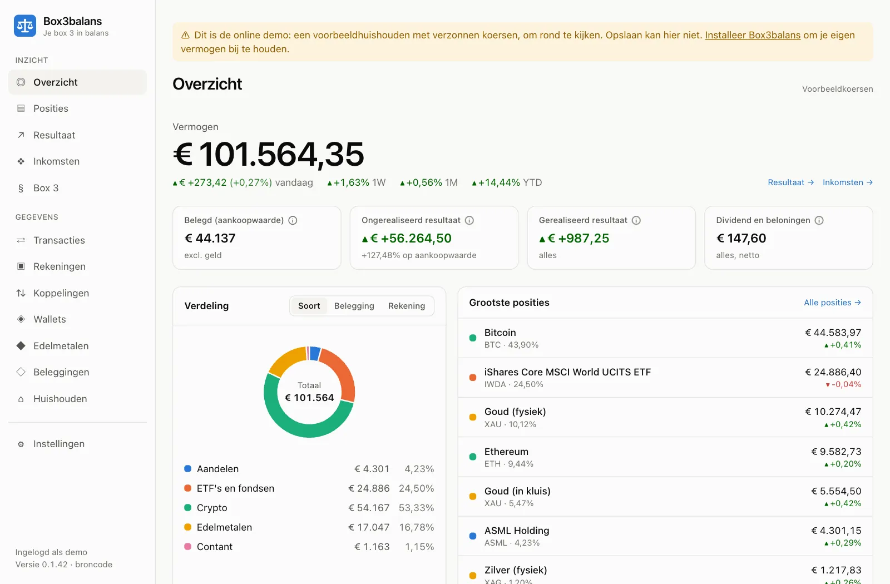

Box3balans Je box 3 en je beleggingen zelf bijhouden
Houd je beleggingen, crypto, edelmetaal en spaargeld bij en zie per jaar wat je in box 3 betaalt, ook met de tegenbewijsregeling. Box3balans draait thuis, op je eigen computer of NAS: je bedragen en transacties blijven daar. Gratis en open source.

In de demo kijk je rond in een voorbeeldhuishouden met verzonnen koersen, in je browser (in English).
Wat Box3balans doet
-
Box 3 per jaar, zoals de aangifte het vraagt
Wat je op 1 januari had, per onderdeel en per rekening, voor je hele huishouden. De forfaitaire belasting met de afronding van de Belastingdienst, het werkelijk rendement voor de tegenbewijsregeling en wat dat scheelt, en een dossier dat laat zien waar elk bedrag vandaan komt.
-
Alles op één plek
Aandelen en ETF's, crypto, goud en zilver, spaargeld, een tweede woning, uitgeleend geld en schulden. Koppelingen met Bitvavo, Kraken, Coinbase, Bitpanda en Interactive Brokers, en wallets op Bitcoin, Ethereum, Solana, Cardano en andere blockchains.
-
Inlezen in plaats van overtikken
De exports van onder meer DEGIRO, Trade Republic, Trading 212, eToro, Bitvavo en Binance, bankexports (ook van ING, Rabobank, Revolut en Wise) en jaaroverzichten als pdf, zoals dat van ING en Goldrepublic.
-
Van jou
Gratis en open source (AGPL-3.0). Geen account en geen abonnement: je installeert het zelf, met Docker, en je gegevens blijven op je eigen apparaat.
Veelgestelde vragen
Hoe werkt box 3?
Box 3 is de belasting over sparen en beleggen. De Belastingdienst gaat uit van wat je op 1 januari had, de peildatum, en rekent met een verondersteld rendement per soort bezit: banktegoeden, overige bezittingen en schulden. Box3balans houdt die waarden voor je bij en rekent de belasting per jaar uit.
Wat is de tegenbewijsregeling?
Was je werkelijke rendement lager dan het veronderstelde, dan kun je dat aantonen en betaal je over wat je echt verdiende. Box3balans berekent per jaar je werkelijk rendement zoals de Belastingdienst erom vraagt, en laat zien wat het je scheelt.
Wat verandert er vanaf 2028?
Er ligt een wetsvoorstel voor een box 3 op basis van werkelijk rendement, vanaf 2028. Eind september 2026 kondigde het kabinet wijzigingen aan: aandelen, obligaties en opties worden dan pas belast bij verkoop, de overige bezittingen vanaf 2030, met een heffingsvrij resultaat van € 1.000. Box3balans laat zien wat het voorstel over je afgelopen jaren zou hebben betekend; belasting bij verkoop zit daar nog niet in. Het is nog geen wet; de aannames pas je zelf aan.
Waar blijven mijn gegevens?
Bij jou. Box3balans draait op je eigen computer, NAS of thuisserver, zonder account en zonder dienst ertussen, en verstuurt nooit bedragen. Het maakt alleen verbinding met een vaste lijst van adressen (koersbronnen, en de wallets en beurzen die je zelf toevoegt), en laat in de app zien wat het verstuurde. Wel ziet een koersbron welke beleggingen je opvraagt (symbolen en ISIN's), en een blockchainverkenner de adressen van wallets die je toevoegt, en daarmee hun saldo. Wat er per functie naar buiten gaat, staat in wat Box3balans verstuurt. Een pdf lees je in je eigen browser, en back-ups zijn versleuteld.
Welke banken, brokers en beurzen werken ermee?
Ruim twintig exports van brokers, beurzen en trackers worden vanzelf herkend; voor andere bestanden kies je zelf de kolommen. De meeste lezers zijn gebouwd op openbare voorbeelden en nog niet getest met een echte export; de app zegt dat bij het inlezen. Bankexports in CAMT.053, MT940 of CSV, jaaroverzichten als pdf, koppelingen met alleen-lezen-sleutels en wallets op adres. De lijst staat in de handleiding.
Wat kost het, en hoe installeer ik het?
Niets: Box3balans is gratis en open source. Je installeert het met Docker, op een NAS, thuisserver of laptop; voor Unraid en CasaOS zijn er sjablonen. Zie de installatiehandleiding.
Is Box3balans met AI gemaakt?
Grotendeels wel. Box3balans wordt gemaakt met hulp van Claude, een AI-codeerassistent van Anthropic: het grootste deel van de code, de tests en de documentatie is daarmee geschreven, in opdracht van en nagekeken door de beheerder, die de keuzes maakt en verantwoordelijk is voor het resultaat. Elke wijziging waaraan Claude meeschreef, is zo gemarkeerd. De berekeningen worden getest, onder meer met de rekenvoorbeelden van de Belastingdienst. Meer in de README.
Is het belastingadvies?
Nee. Box3balans maakt schattingen. Controleer de bedragen met de jaaroverzichten van je bank en broker voordat je ze in je aangifte gebruikt.